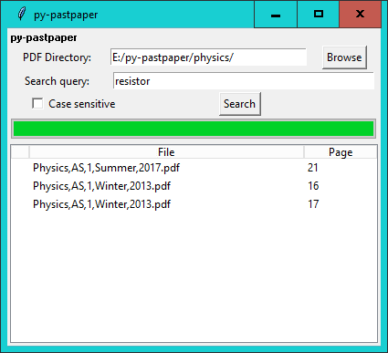

This is a pretty easy to use tool that allows you to search for a specific substring in a folder of PDF files. Specify the directory path
that contains the PDF files you want to search, specify a search query, and press "Search". It will look through every PDF in the directory,
and if the substring appears in any of the PDFs, it will tell you which one, and on what page. You can also make your search case-sensitive.
You can view the source on GitHub, or download binaries on the Releases page.
